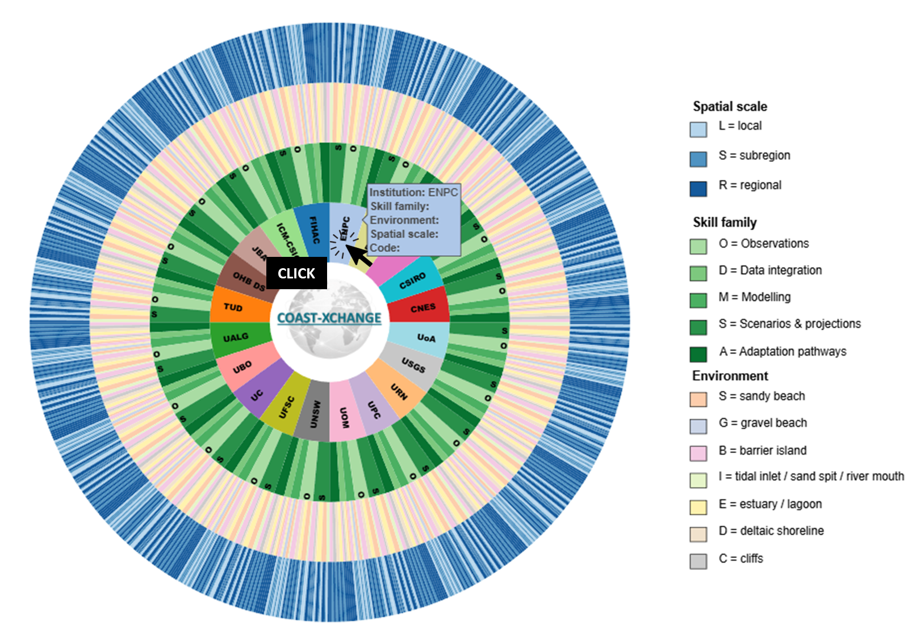
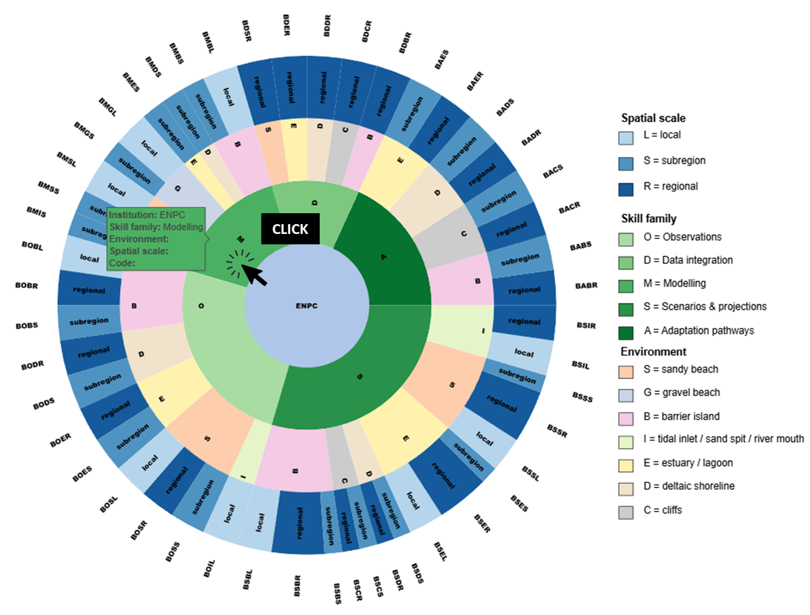
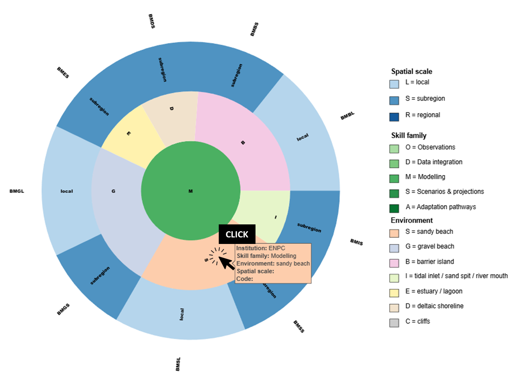
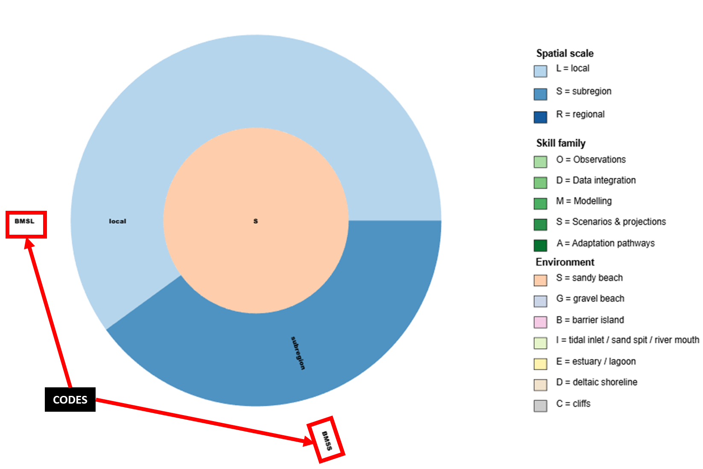
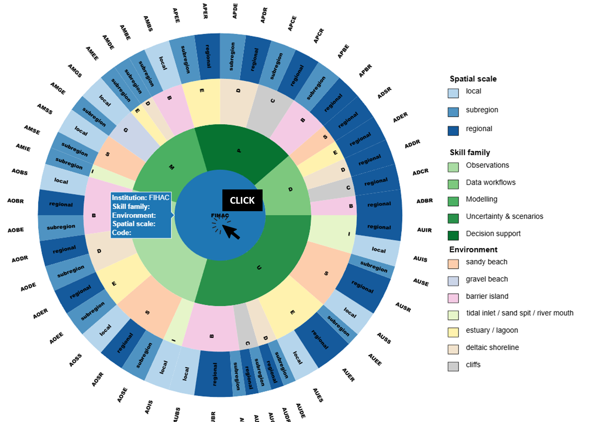

1
Select the host institution
E.g.: ENPC.

COAST-XCHANGE · Consortium Guide
This page is a simple guide for consortium members to identify the most relevant skills for a secondment and report them using the shared COAST-XCHANGE coding system.
Workflow
Follow the steps below.




Secondment description: (M6–M8 - Phase 1 - WP2) will develop skills BMSL and BMSS, sharing uncertainty-aware calibration techniques and learning how to extend and apply these methods to different morphological variables, such as sandbar position and dune morphology.
Example 1: (M22–M26 - Phase 2 - WP3) will develop skills CUSS and CUSE by building a multi-model framework coupled with a climate emulator to propagate quantified structural uncertainties (WP2) alongside climate variability.
Example 2: (M24–M27 - Phase 2 - WP2) will develop skills OMSS and OMSE by designing and implementing a benchmark comparison of shoreline evolution models using IH-SET across morphodynamically diverse beaches along the southeastern Australian coast, including calibration, performance evaluation, and uncertainty analysis across contrasting coastal settings.
Project structure
Overview of the main project phases across M1–M48.
Select one bar to display its description here.
Interactive chart

Secondments
Enter your institution to load existing secondments, edit them, add new ones, and save all rows for that institution.
Live stats
These charts are generated directly from the live secondments CSV stored in the cloud and update automatically as new entries are submitted.
Monthly count of active secondments, stacked by project phase across M1–M48.
Comparison between the number of secondments and secondment-months for each institution.
Comparison between the number of hosted secondments and hosted secondment-months for each institution.
contact
If you have any questions about how to use the interactive graphic or how to report secondment skills, please contact us at lucas.defreitas@unican.es